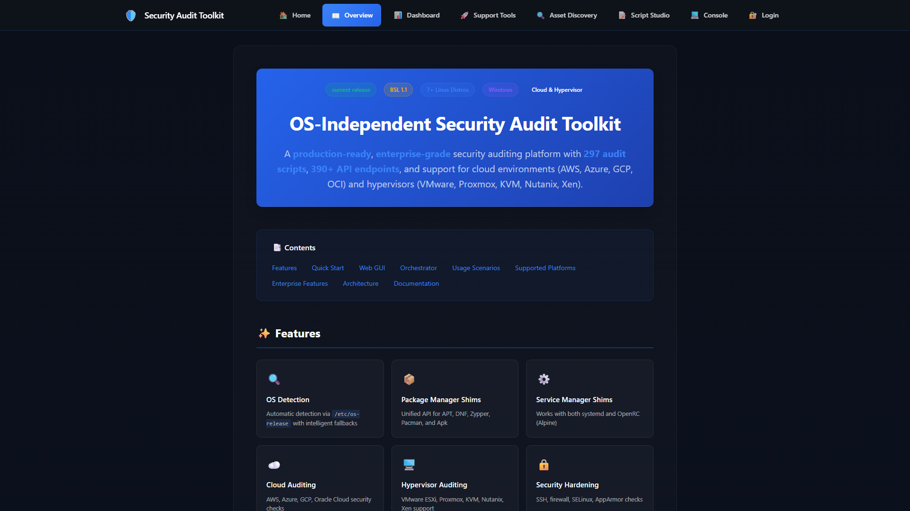
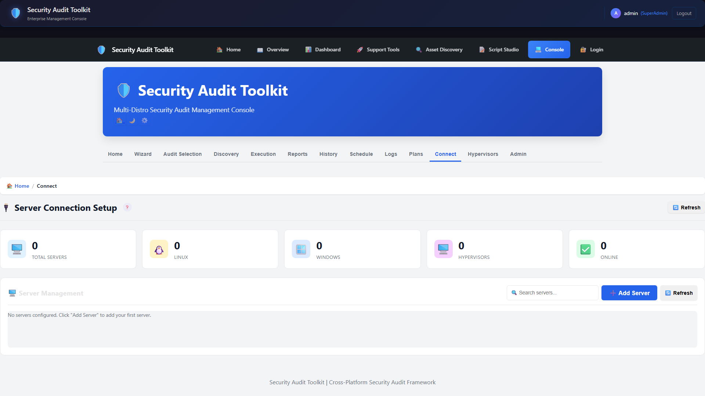
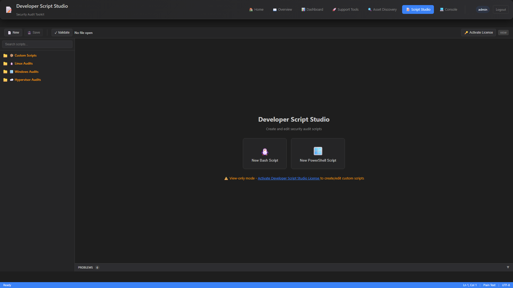
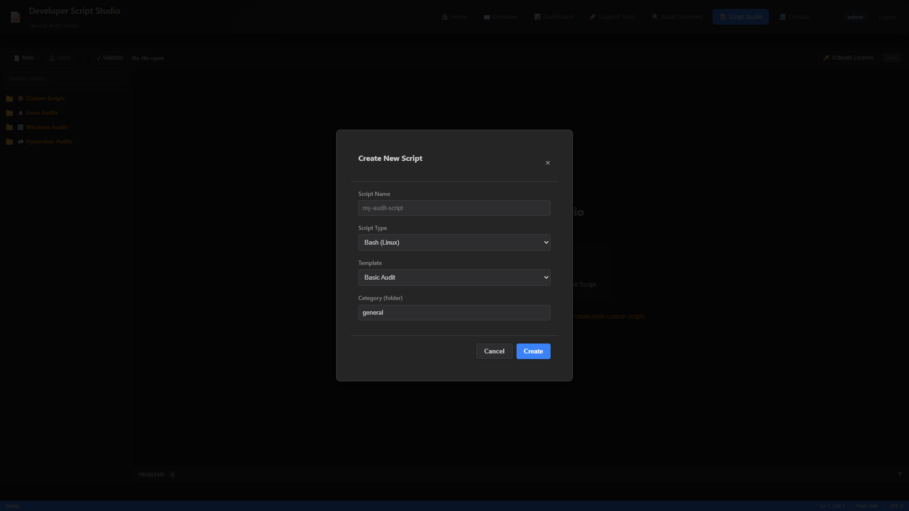
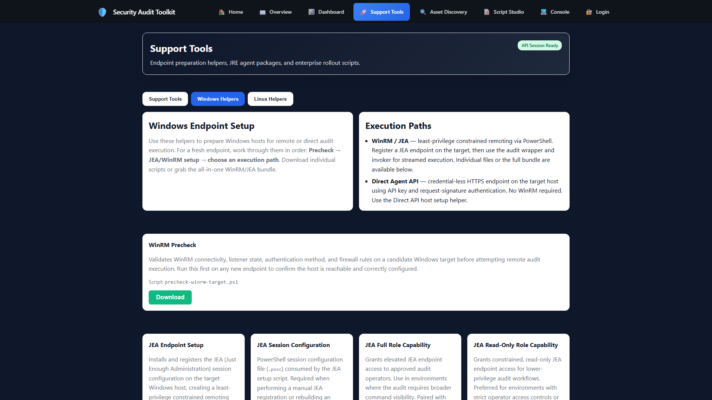
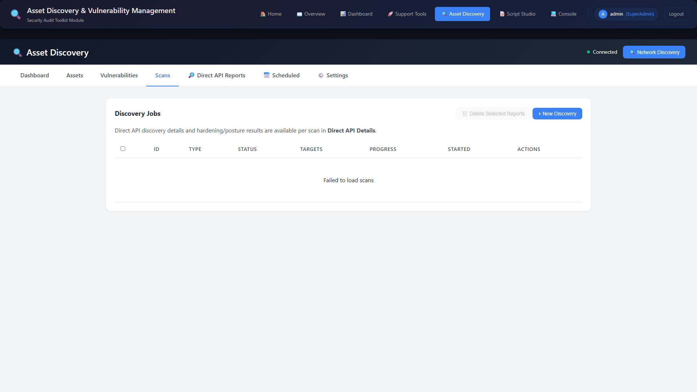
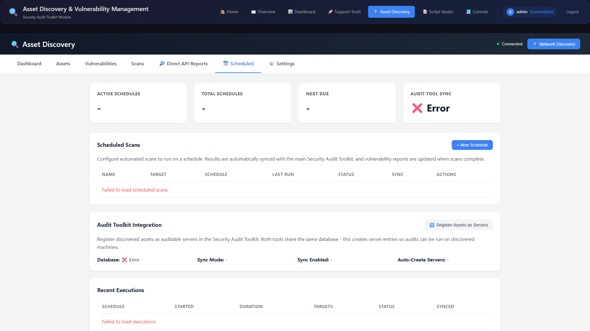
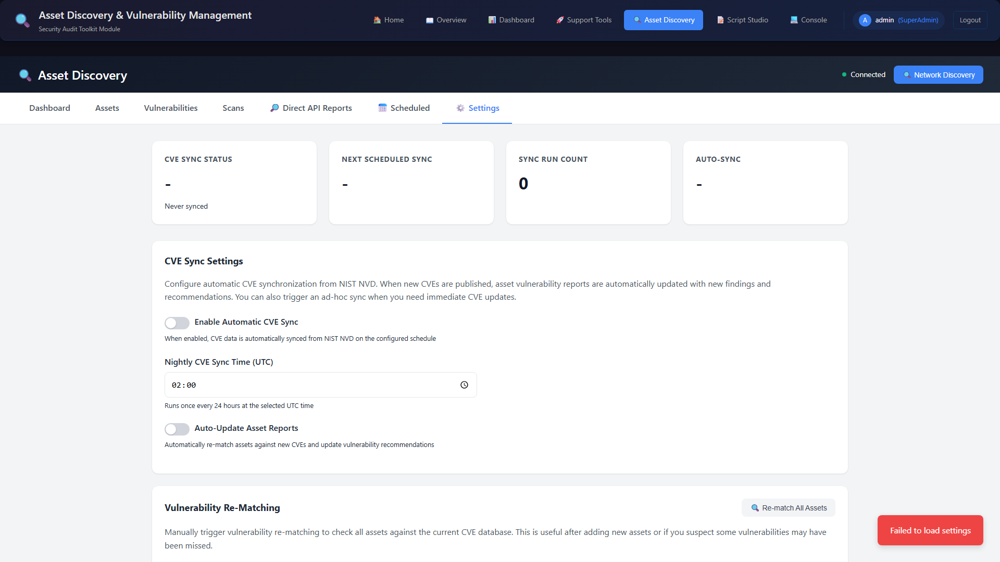

Screenshots
Product screenshots
Refreshed screenshots from the latest build and release stream.







Advanced Workflows
Scripting and helper tooling






Asset Discovery
Discovery scans and scheduling


